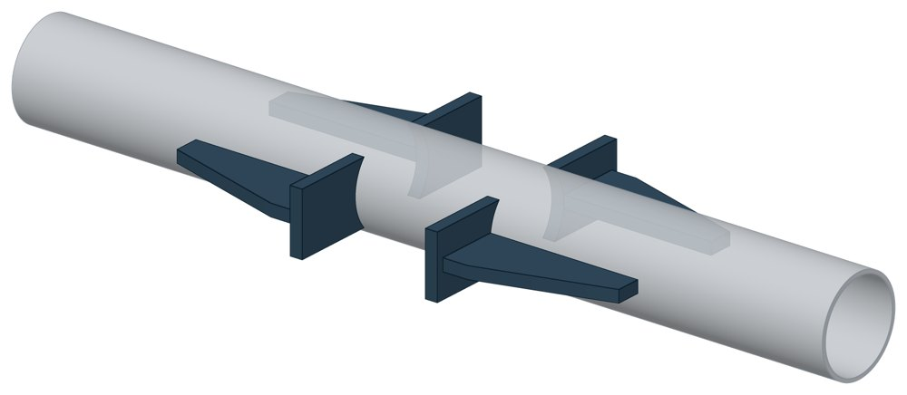
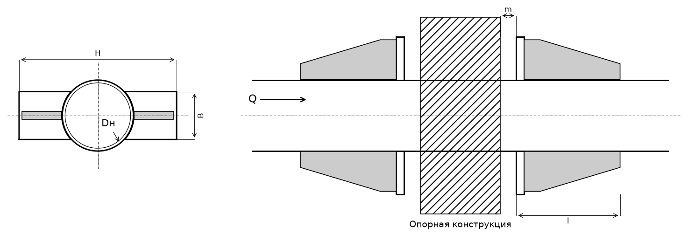

Опора неподвижная двухупорная ТС-760
Неподвижная упорная опора на 30 кН для труб Dн 57, 76 и 89 мм: четыре упора, по два с каждой стороны опорной конструкции. Собственная конструкция ПРОМБУРГ: типового чертежа на это обозначение нет.

- Диаметр трубы Dн
- 57–89 мм
- Документ
- Собственная конструкция ПРОМБУРГ
- Исполнений
- 3
- Осевая Q
- до 30 кН
- Масса
- 2,16–2,49 кг
- Сталь
- Листовые детали — Ст3сп5 ГОСТ 14637-89. Для холодного климата — низколегированная сталь, в том числе 09Г2С; размеры опоры при этом не меняются.
- Покрытие
- Окраска по грунту, кроме поверхностей под сварку. Вид покрытия согласуется при заказе.
- 3D-модели
- у всех исполнений
Применение и монтаж
Назначение: где применяется
Трубопроводы тепловых сетей Dн 57, 76 и 89 мм, где осевая сила больше 20 кН — например, концевая неподвижная опора участка с сильфонным компенсатором. Наибольшая осевая нагрузка 30 кН проверена расчётом на прочность. Стенка трубы — не тоньше 3 мм для Dн 57 и 76, 3,5 мм для Dн 89.
Монтаж: как устанавливается
Упоры приваривают к трубе швом с катетом, равным толщине стенки трубы. К опорной конструкции они прилегают свободно, без приварки. Зазор между трубой и опорной конструкцией — 30 мм, между упором и опорной конструкцией — 20 мм.
Отличия от соседних типов
Типовая двухупорная опора по альбому серии на эти диаметры — ТС-660, осевая сила 20 кН. У ТС-760 плита и ребро упора толщиной 10 мм вместо 6, упор длиной 130 мм вместо 106. Сила до 20 кН без приварки к трубе — хомутовая с корпусом ТС-670.
Габаритная схема ТС-760

Состав комплекта на одну опору
| Упор (плита с ребром) | 4 шт. |
Таблица исполнений ТС-760
| Обозначение | Код ПРОМБУРГ | Dнмм | Стенка Sмм | QкН | Габарит Hмм | Ширина упора Вмм | Длина упора Lмм | Массакг | 3D |
|---|---|---|---|---|---|---|---|---|---|
| ТС-760.00.00 | ПБ-760-0057-1 | 57 | 3 | 30 | 172 | 40 | 130 | 2,16 | 3D |
| ТС-760.00.00-01 | ПБ-760-0076-1 | 76 | 3 | 30 | 187 | 50 | 130 | 2,33 | 3D |
| ТС-760.00.00-02 | ПБ-760-0089-1 | 89 | 3,5 | 30 | 197 | 60 | 130 | 2,49 | 3D |
Чтобы заказать, сообщите обозначение и код ПРОМБУРГ: +7 (499) 325-51-35, promburg@yandex.ru.
Нормативные документы
- Собственная конструкция ПРОМБУРГ — документ, по которому изготавливается изделие
- ГОСТ 14637-89 Прокат толстолистовой из углеродистой стали обыкновенного качества — редакция, на которую ссылается альбом серии; действующую редакцию уточняйте
Связанные позиции
- Соседний тип: ТС-660 — неподвижная двухупорная
- Парная подвижная опора: ТС-623 — скользящая приварная (общий диапазон Dн 32–159)
Собрать узел с этим изделием
- Конструктор узла: собрать участок с компенсатором под свои данные труба, длина, среда, условия — состав узла и спецификация бесплатно
На трубу Dн 57–89 мм в каталоге
Позиции каталога с исполнениями на те же наружные диаметры трубы.
Детали трубопровода
- Заглушка стальная эллиптическая общих Dн: 3
- Отвод стальной крутоизогнутый 90°, 09Г2С общих Dн: 3
- Отвод стальной крутоизогнутый 90° общих Dн: 3
- Переход стальной концентрический общих Dн: 3
- Фланец стальной воротниковый общих Dн: 3
- Фланец стальной плоский приварной общих Dн: 3
Компенсаторы
- Компенсатор сильфонный 2ОПКР общих Dн: 3
- Компенсатор сильфонный 2ОПКР (ИЯНШ) 2ОПКРИ общих Dн: 3
- Компенсатор сильфонный 2СКУ.М 2СКУМ общих Dн: 3
- Компенсатор сильфонный 2СКУ.М (ИЯНШ) 2СКУМИ общих Dн: 3
- Компенсатор сильфонный 2СКУ.ППМ 2СКУППМ общих Dн: 3
- Компенсатор сильфонный 2СКУ.ППМ (ИЯНШ) 2СКУППМИ общих Dн: 3
- Компенсатор сильфонный 2СКУ.ППУ 2СКУППУ общих Dн: 3
- Компенсатор сильфонный 2СКУ.ППУ (ИЯНШ) 2СКУППУИ общих Dн: 3
- Компенсатор сильфонный 2СКУ.ППУ/ОЦ (ИЯНШ) 2СКУППУОЦИ общих Dн: 3
- Компенсатор сильфонный DEK общих Dн: 3
- Компенсатор сильфонный фланцевый KSOF общих Dн: 3
- Компенсатор сильфонный для систем отопления общих Dн: 3
- Компенсатор сильфонный для отопления с кожухом КОК общих Dн: 3
- Компенсатор сильфонный КС общих Dн: 3
И ещё 21 тип — в оглавлении каталога.
Другие опоры и подвески
- Опора неподвижная хомутовая ТС-659 общих Dн: 3
- Опора неподвижная двухупорная ТС-660 общих Dн: 3
- Опора неподвижная хомутовая с корпусом ТС-670 общих Dн: 3
- Опора скользящая приварная ТС-623 общих Dн: 3
- Опора скользящая с плоским хомутом ТС-625 общих Dн: 3
- Опорные плиты диэлектрические ТС-632 общих Dн: 3
- Опоры хомутовые подвижные 313 ТС общих Dн: 3
- Опоры хомутовые подвижные 313 ТС в футляре общих Dн: 3
- Опоры неподвижные ППУ-ОЦ (ПЭ) ППУ неподвижная общих Dн: 3
- Опоры скользящие ППУ-ПЭ(ОЦ) ППУ скользящая общих Dн: 3
И ещё 49 типов — в оглавлении каталога.
Другие типы раздела
Неподвижные опоры тепловых сетей (ТС-659…ТС-671)
- Опора неподвижная хомутовая ТС-659
- Опора неподвижная двухупорная ТС-660
- Опора неподвижная четырёхупорная ТС-661
- Опора неподвижная двухупорная усиленная ТС-663
- Опора неподвижная четырёхупорная усиленная ТС-664
- Опора неподвижная двухупорная сальниковых компенсаторов ТС-665
- Опора неподвижная щитовая ТС-666
- Опора неподвижная щитовая усиленная ТС-667
- Опора неподвижная боковая ТС-668
- Опора неподвижная хомутовая бескорпусная ТС-669
- Опора неподвижная хомутовая с корпусом ТС-670
- Опора неподвижная бугельная с корпусом ТС-671
Частые вопросы
Чем неподвижная опора отличается от подвижной?
Неподвижная закрепляет трубу в одной точке и принимает усилия от температурного расширения, давления и трения. Подвижная держит вес трубы и даёт ей перемещаться при нагреве. Неподвижные делят трассу на участки компенсации, подвижные стоят между ними. Место и тип каждой опоры задаёт проект.
Какую неподвижную опору выбрать: хомутовую, упорную, щитовую?
Выбор идёт по расчётной осевой силе и по тому, на что опора опирается. Малый диаметр и небольшая сила — хомутовая ТС-659. Нужна высота под изоляцию — хомутовая с корпусом ТС-670 или бугельная ТС-671. Труба проходит сквозь стенку — щитовая ТС-666, при большой силе усиленная ТС-667. Упор в балку или траверсу — двух- и четырёхупорные ТС-660, ТС-661, при больших нагрузках усиленные ТС-663, ТС-664.
Зачем нужна толщина стенки трубы?
Для Dн от 426 мм в одной позиции серии есть исполнения под разные стенки: геометрия близкая, но допускаемая нагрузка другая — её ограничивают местные напряжения в стенке трубы. Без толщины стенки исполнение однозначно не определить. Пример — щитовая ТС-666 на Dн 530: 400 кН при стенке 7 мм и 550 кН при 9 мм.
Какую нагрузку выдерживает опора?
Допускаемая нагрузка задана в таблице для каждого исполнения — она в первой группе колонок каждой карточки. Хомутовая ТС-659 — осевая Q от 5 до 25 кН, щитовая ТС-666 — от 50 до 3300 кН, хомутовая с корпусом ТС-670 — Q до 380 кН и боковая T до 200 кН.
Кто считает нагрузку на неподвижную опору?
Нагрузку определяет проектировщик расчётом трубопровода на прочность и компенсацию: она зависит от схемы трассы, а не только от диаметра. По заданным Dн, стенке и нагрузкам Q, P, T подбирается исполнение из таблицы.
Неподвижную опору приваривают к строительной конструкции?
Упоры и щиты приваривают к трубе, а к несущей конструкции они прилегают свободно, без приварки — так разгружаются от крутящих моментов и опора, и конструкция. У хомутовой ТС-659 упоры приваривают к трубе, а хомут — к балке.